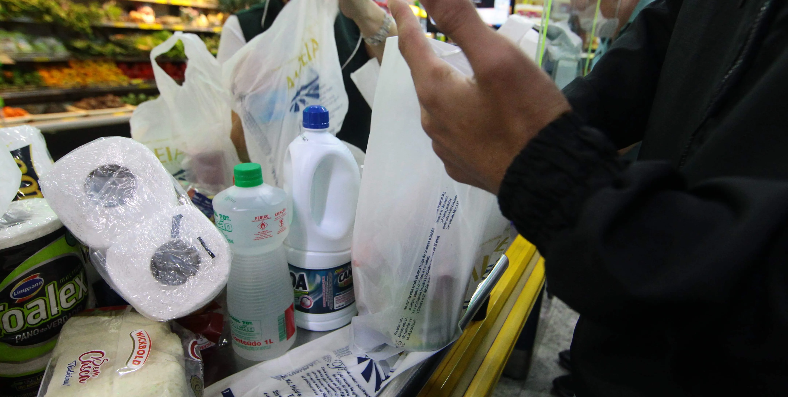
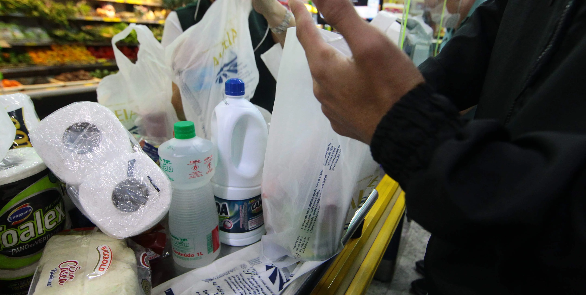

Ritmo de Consumo
O que é Ritmo de Consumo?
O ritmo de consumo se refere à velocidade com que os consumidores compram e usam determinados produtos ou
serviços ao longo do tempo. Esse ritmo pode variar dependendo do tipo de produto ou serviço e da
preferência do consumidor.
O ritmo de consumo pode ser influenciado por vários fatores, incluindo fatores econômicos, culturais e
sociais, bem como a disponibilidade de produtos e serviços e as preferências pessoais do consumidor.
Compreender o ritmo de consumo é importante para as empresas que desejam ajustar sua oferta de produtos
e serviços para atender às necessidades dos consumidores e manter uma demanda constante ao longo do
tempo.
Consequências do ritmo de consumo
Além de retirar matérias-primas da natureza, fabricar e transportar materiais, fazer grande uso de
energia elétrica e de água. Gera emissão de gases poluentes, degradação e devastação ambiental, poluição
geral e, consequentemente, a destruição de ecossistemas.
Também causa consequências à sociedade, já que contribui para o processo de degradação das relações
sociais. Muitas vezes excluímos pessoas e as julgamos pelo simples fato de ela não possuir tal objeto ou
não estar com “roupas da moda”.
Ritmo de Consumo nas Empresas
O ritmo de consumo nas empresas pode ser influenciado por uma variedade de fatores, incluindo o tipo de
indústria em que a empresa opera, as tendências do mercado, a oferta e demanda de produtos ou serviços,
e as preferências do consumidor.
As empresas podem tentar estimular o ritmo de consumo de várias maneiras, como através de campanhas de
marketing, promoções especiais, ofertas exclusivas e descontos. Além disso, o ritmo de consumo pode ser
afetado por fatores sazonais, como o aumento das vendas durante as festas de fim de ano ou o verão, ou
pelas condições econômicas gerais. Por exemplo, durante um período de recessão econômica, as empresas
podem enfrentar uma desaceleração no ritmo de consumo, à medida que os consumidores reduzem seus gastos
discricionários.
Ritmo de Consumo na sociedade
O ritmo de consumo na sociedade tem sido cada vez mais acelerado nas últimas décadas. Isso se deve em
grande parte aos avanços tecnológicos, à globalização e à crescente pressão social para consumir mais e
mais.
No entanto, esse ritmo acelerado de consumo pode ter consequências negativas para o meio ambiente, para a
saúde e para a qualidade de vida das pessoas. O aumento da produção de bens e a demanda crescente por
recursos naturais levam a uma maior exploração dos ecossistemas e à geração de resíduos e poluição. Além
disso, a pressão constante para consumir pode levar ao endividamento excessivo e à insatisfação com a
vida, criando uma cultura de consumo excessivo que não traz felicidade duradoura.
O que é diminuição do ritmo de consumo?
A diminuição do ritmo de consumo é um conceito que se refere à redução da quantidade de recursos naturais
e materiais utilizados pelos indivíduos e pela sociedade como um todo. Essa ideia tem ganhado cada vez
mais destaque em um mundo em que os recursos naturais são limitados e a preocupação com o meio ambiente
se torna cada vez mais urgente.
Qual é a importância da diminuição do ritmo de consumo?
Em primeiro lugar, a redução do consumo pode ajudar a preservar os recursos naturais. A extração
excessiva de recursos como petróleo, madeira e minerais pode levar à degradação do meio ambiente, além
de esgotar os recursos disponíveis. Ao reduzir a demanda por esses recursos, é possível diminuir a
pressão sobre o meio ambiente e preservar os recursos naturais para as gerações futuras.
Como nossa região se encontra em relação ao ritmo de consumo?
A evolução urbana de Sorocaba, cidade do interior paulista, começou em 1875, com a inauguração de sua
primeira estação ferroviária, que tinha o objetivo de ligar o interior à capital, abrangendo o comércio
e aumentando o fluxo de migrantes na cidade. A primeira grande indústria sorocabana foi a fábrica têxtil
Nossa Senhora da Ponte, fundada em 1882, dando a cidade o reconhecimento nacional na produção de
tecidos.
Primeiramente, vale destacar que Sorocaba, é um município bastante movimentado em relação ao consumo de
materiais, destacando principalmente as grandes indústrias que existem. De acordo com pesquisas,
Sorocaba é
a 5ª cidade do interior do país com maior potencial de consumo, sendo alavancada pelas principais bases
de
sua economia, sendo elas o comércio, serviços, agronegócio e construção civil.
Porem, além da alta demanda de produção e vendas, muito se sabe que para realizar o processo de produção
do
produto é necessário materiais suficientes para sua produção, o que muitas das empresas usam grande
quantidade
de recursos para produzir e gerar seus lucros, por outro lado, parte destes materiais como sobras e
restos
por exemplo são descartados de forma indevida e sem conscientização.
Para isso, a prefeitura de Sorocaba juntos outras organizações ambientais implementaram projetos
inovadores
afim de mitigar o consumo e descarte de produtos e materiais que ainda pode ser reutilizado de forma
benéfica e assim evitando gastar mais e mais recursos naturais.
Separamos alguns projetos que atualmente funcionam em nossa cidade e como elas ajudam a
diminuir o consumo do municipio:
 
